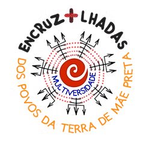
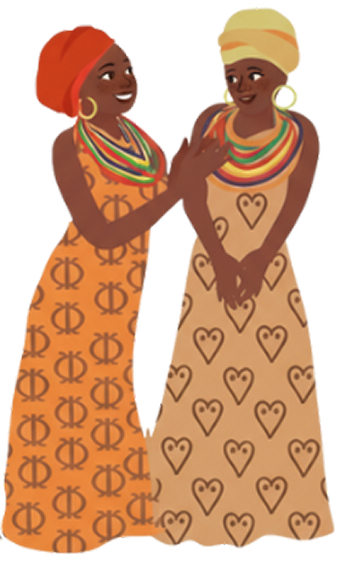
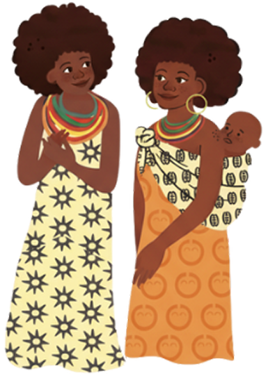

ENCRUZILHADAS

O Programa Encruzilhadas da Multiversidade, ocorrido de dezembro de 2021 a junho de 2023, reuniu três projetos desenvolvidos através da Multiversidade dos Povos da Terra de Mãe Preta, teia de comunidades articulada pela iniciativa da Comunidade Kilombola Morada da Paz, com o intuito de desformação política, espiritual, estética e econômica coordenada com seus jovens lideranças, multiplicadores dos saberes e vivências, de povos originários e comunidades tradicionais.
Confira

